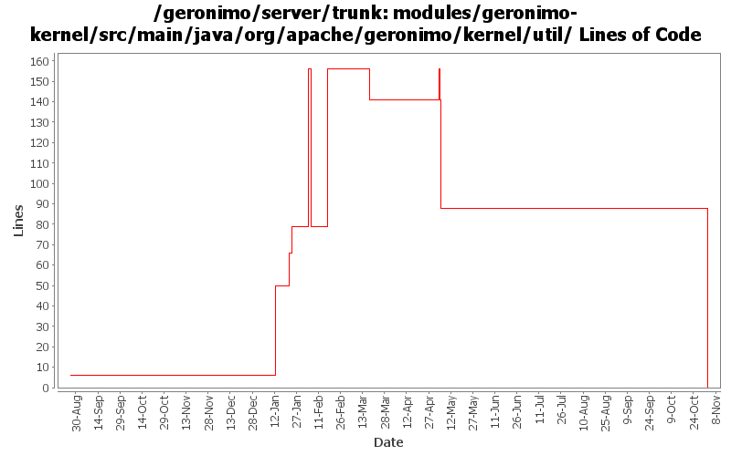

[root]/modules/geronimo-kernel/src/main/java/org/apache/geronimo/kernel/util

| Author | Changes | Lines of Code | Lines per Change |
|---|---|---|---|
| Totals | 27 (100.0%) | 381 (100.0%) | 14.1 |
| gdamour | 11 (40.7%) | 223 (58.5%) | 20.2 |
| kevan | 5 (18.5%) | 95 (24.9%) | 19.0 |
| ccardona | 1 (3.7%) | 44 (11.5%) | 44.0 |
| akulshreshtha | 2 (7.4%) | 19 (5.0%) | 9.5 |
| prasad | 6 (22.2%) | 0 (0.0%) | 0.0 |
| jdillon | 2 (7.4%) | 0 (0.0%) | 0.0 |
GERONIMO-3565. Modules distributed amongst framework/modules and plugins
0 lines of code changed in 6 files:
Refactor the various CLIs such that oprtions parsing and arguments are done prior to boot the
boot configuration.
* Add a geronimo-cli JAR containing all the classes to perform options and arguments parsing. It is included in the lib/ folder and added to the Class-Path manifest entry of the deployer.jar, server.jar and client.jar runnable JARs;
* Use commons-cli to perform the option parsing; and
* add support for an extra verbose level, -vvv, and remap the verbose level as follows: -v -> INFO, -vv -> DEBUG, -vvv -> TRACE.
This fixes GERONIMO-3059 - CLIs refactoring - options and arguments parsing should be done prior the boot of a Kernel to provide a quicker feedback to users if they are invalid
8 lines of code changed in 3 files:
GERONIMO-3123 Reverting 535158 due to tck breakage
2 lines of code changed in 1 file:
GERONIMO-3123 Move the 'var' directory to geronimo0/var and create a copy named template/var in GERONIMO_HOME
17 lines of code changed in 1 file:
Apply MainBootstrapper boot approach to ClientCommandLine and Daemon to
reduce reliance on lib/ and uniform the way the CLI work.
This fixes GERONIMO-2978 - ClientCommandLine and Daemon improvement to reduce
reliance on lib/.
As part of this change, the RMIClassLoaderSpi implementation has been moved
from geronimo-system to geronimo-kernel as such an implementation must be
in the system class loader and geronimo-system is no longer imported by
the system class loader.
61 lines of code changed in 2 files:
Second attempt to change the way the online/offline deployers and the JSR88
deployment driver work. The first attempt was breaking the TCK amd the
eclipse plugin.
Online deployer, i.e. deployer.jar, boots a Kernel to load its dependencies,
e.g. geronimo-deploy-tool, and registers the available ModuleConfigurers with
the DeploymentManager.
ModuleConfigurers to be registered are loaded by the persistent configuration
list jsr88-configurer-config.xml.
In the case of an offline deployment, the online deployer starts the
offline-deployer configuration within the same Kernel. In turn, the
offline-deployer configuration starts a list of configurations to register
the available module builders.
Add a log4j configuration for the online deployer.
DeploymentFactoryBootstrapper is the new JSR88 deployment driver. It boots a
kernel; starts the configuration list jsr88-configurer-config.xml; retrieves
the "actual" DeploymentFactory implementation from the kernel; and delegates
to this retrieved imoplementation.
The JSR88 JAR driver is now named jsr88-deploymentfactory.jar.
This fixes:
* GERONIMO-2794 - Improve online deployer to register ModuleConfigurers from the repository; and
* GERONIMO-2767 - Minimize side effects of the offline deployer
77 lines of code changed in 2 files:
Revert deployer changes as they do break the Eclipse plugin and TCK.
I will investigate offline.
svn merge -r503370:503369 .
0 lines of code changed in 2 files:
Online deployer, i.e. deployer.jar, boots a Kernel to load its dependencies,
e.g. geronimo-deploy-tool, and registers the available ModuleConfigurers with
the DeploymentManager.
ModuleConfigurers to be registered are loaded by the persistent configuration
list jsr88-configurer-config.xml.
In the case of an offline deployment, the online deployer starts the
offline-deployer configuration within the same Kernel. In turn, the
offline-deployer configuration starts a list of configurations to register
the available module builders.
Add a log4j configuration for the online deployer.
This fixes:
* GERONIMO-2794 - Improve online deployer to register ModuleConfigurers from the repository; and
* GERONIMO-2767 - Minimize side effects of the offline deployer
77 lines of code changed in 2 files:
GERONIMO-2690 Fix OutOfMemoryErrors in ClassLoader view -- thanks for the patch Rakesh! Also, set svn properties for files and remove tab characters from source files.
73 lines of code changed in 1 file:
Fix files with bad license headers
16 lines of code changed in 1 file:
GERONIMO-2689 : New View for JNDI name in all the contexts
GERONIMO-2690 : New view for all the classloaders and classes loaded in it
GERONIMO-2691 : New view for the hierarchical modules and linked dependencies
Thanks Rakesh!
44 lines of code changed in 1 file:
GERONIMO-2537 Update the src headers in server/trunk/modules to be compliant with the new ASF src header and copyright policy (http://www.apache.org/legal/src-headers.html). I also did some cleanup of the src headers and tried to make them all a consistent format
6 lines of code changed in 3 files:
Apply standard properties
0 lines of code changed in 2 files: